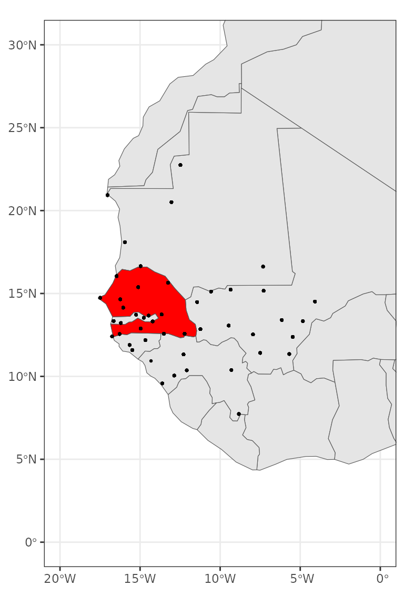

Daily weather interpolation over Senegal
Miquel De Cáceres
2024-10-18
Source:vignettes/examples/interpolation-senegal.Rmd
interpolation-senegal.RmdIn this document we show how to obtain and process the topographic and weather data needed by package meteoland to conduct weather interpolation over a given country, using package worldmet as source for reference weather station data. We’ll use Senegal as case study.
We begin by loading necessary libraries, all available from CRAN:
library(sf)
library(dplyr)
library(terra)
library(stars)
library(geodata)
library(tidyterra)
library(meteoland)
library(ggplot2)
library(cowplot)We will also use package afrilearndata from GitHub, to display African country limits:
# remotes::install_github("afrimapr/afrilearndata")
library(afrilearndata)Accessing weather station data
We start by loading package worldmet, which provides access to over 30.000 weather stations across the globe:
In order to download weather data, we must first obtain the codes of
the weather stations available for our study area. This can be done
using function getMeta() from worldmet, which we use to
know available weather stations for Senegal and neighbouring
countries:
# Country codes:
# Senegal - SG
# Gambia - GA
# Guinea - GV
# Mali - ML
# Mauritania - MR
# Guinea bissau - PU
sg_st <- dplyr::bind_rows(worldmet::getMeta(country="SG", plot = FALSE),
worldmet::getMeta(country="GA", plot = FALSE),
worldmet::getMeta(country="GV", plot = FALSE),
worldmet::getMeta(country="ML", plot = FALSE),
worldmet::getMeta(country="MR", plot = FALSE),
worldmet::getMeta(country="PU", plot = FALSE))The station metadata looks like this:
sg_st## # A tibble: 57 × 12
## usaf wban station ctry st call latitude longitude `elev(m)` begin
## <chr> <chr> <chr> <chr> <chr> <chr> <dbl> <dbl> <dbl> <date>
## 1 6160… 99999 SAINT … SG NA GOSS 16.1 -16.5 2.7 1949-04-01
## 2 6161… 99999 PODOR SG NA GOSP 16.6 -15.0 7 1973-01-01
## 3 6162… 99999 LINGUE… SG NA GOOG 15.4 -15.1 21 1950-03-04
## 4 6163… 99999 MATAM/… SG NA GOSM 15.6 -13.2 17 1949-04-23
## 5 6164… 99999 LEOPOL… SG NA GOOY 14.7 -17.5 25.9 1943-04-01
## 6 6166… 99999 DIOURB… SG NA GOOD 14.6 -16.2 9 1950-02-06
## 7 6167… 99999 KAOLACK SG NA GOOK 14.1 -16.1 7.9 1950-02-05
## 8 6168… 99999 TAMBAC… SG NA GOTT 13.7 -13.7 49.1 1949-05-01
## 9 6169… 99999 ZIGUIN… SG NA GOGG 12.6 -16.3 22.9 1949-04-02
## 10 6169… 99999 CAP SK… SG NA GOGS 12.4 -16.7 15.8 1977-11-01
## # ℹ 47 more rows
## # ℹ 2 more variables: end <date>, code <chr>Let’s assume that we want to interpolate weather for year 2020. We
can download hourly weather station data for the selected stations and
year 2020 using function importNOAA() and programming a
loop over stations:
hourData <- NULL
for(i in 1:length(sg_st$code)) {
cat(paste0(sg_st$code[i]," "))
tryCatch({
hi <- worldmet::importNOAA(code = sg_st$code[i], year=2020, quiet=TRUE)
if(is.null(hourData)) {hourData <- hi}
else {hourData <- dplyr::bind_rows(hourData,hi)}
cat(" [success].")
}, error = function(e) {cat("[failed].")})
}Processing weather station data for interpolation
Some stations had missing data for year 2020 and were excluded from
the output. Using function worldmet2meteoland() from
meteoland, we can reshape the hourly data of the
remaining stations into daily data in form of an sf
object:
sf_sen <- worldmet2meteoland(hourData, complete = TRUE)
sf_senAn interpolator object needs to be created for interpolation,
containing not only station weather and topographic data but also
interpolation parameters. This can be obtained using function
create_meteo_interpolator():
interpolator_sen <- meteoland::create_meteo_interpolator(sf_sen, verbose = FALSE)## Warning: No interpolation parameters provided, using defaults
## ℹ Set the `params` argument to modify parameter default valuesThe warning message indicates that default interpolation parameters are set and in a serious application we should calibrate the parameters before using the reference data for interpolation.
The interpolator object is of class stars:
interpolator_sen## stars object with 2 dimensions and 13 attributes
## attribute(s):
## Min. 1st Qu. Median Mean 3rd Qu.
## Temperature 11.0000000 26.450000 28.537500 28.750958 30.91154
## MinTemperature 8.5000000 21.000000 24.000000 23.712257 26.00000
## MaxTemperature 11.0000000 31.000000 34.050000 34.322865 38.00000
## RelativeHumidity 0.2667855 34.205043 57.318043 55.513283 77.66032
## Precipitation 0.0000000 0.500000 3.750000 11.342697 13.00000
## Radiation 6.6175299 17.168025 19.766780 19.375520 22.35280
## WindDirection 0.0000000 52.937535 192.002116 171.436844 270.00000
## WindSpeed 0.0000000 1.500000 2.311111 2.605188 3.31099
## elevation 1.0000000 17.000000 51.500000 172.636383 289.00000
## aspect 0.0000000 0.000000 0.000000 0.000000 0.00000
## slope 0.0000000 0.000000 0.000000 0.000000 0.00000
## SmoothedPrecipitation 0.1000000 3.000000 8.000000 11.312237 14.66667
## SmoothedTemperatureRange 0.0000000 5.555667 9.225806 9.525796 14.16504
## Max. NA's
## Temperature 48.00000 3893
## MinTemperature 48.00000 3893
## MaxTemperature 48.20000 3893
## RelativeHumidity 100.00000 3893
## Precipitation 381.30000 15778
## Radiation 28.92108 3893
## WindDirection 360.00000 4464
## WindSpeed 33.50000 3983
## elevation 1035.10000 0
## aspect 0.00000 0
## slope 0.00000 0
## SmoothedPrecipitation 137.30000 12897
## SmoothedTemperatureRange 21.40484 1816
## dimension(s):
## from to offset delta refsys point
## date 1 366 2020-01-01 UTC 1 days POSIXct FALSE
## station 1 47 NA NA WGS 84 TRUE
## values
## date NULL
## station POINT (-9.35 15.23333),...,POINT (-8.833333 7.733333)If needed, we can display the location of the weather stations on a map with country limits. This is useful to know the station density in the study area. In our case we will use the following code:
data("africountries")
senegal <- africountries[africountries$name=="Senegal",]
ggplot()+
geom_sf(data = sf::st_geometry(africountries))+
geom_sf(data = sf::st_geometry(senegal), fill= "red")+
geom_sf(data = sf_sen[1], size = 0.5)+
xlim(c(-20,0))+ ylim(c(0,30))+
theme_bw()
Accessing and arranging topographic data
To perform weather interpolation, we need the topography (elevation,
slope, aspect) of the target area. We can use function
elevation_30s() from package geodata to
download elevation data for Senegal:
elev_raster <- geodata::elevation_30s(country="SEN", path = tempdir())
names(elev_raster) <- "elevation"
elev_raster## class : SpatRaster
## dimensions : 564, 780, 1 (nrow, ncol, nlyr)
## resolution : 0.008333333, 0.008333333 (x, y)
## extent : -17.7, -11.2, 12.1, 16.8 (xmin, xmax, ymin, ymax)
## coord. ref. : lon/lat WGS 84 (EPSG:4326)
## source : SEN_elv_msk.tif
## name : elevation
## min value : -7
## max value : 542The previous function return SpatRaster object (package
terra). In order to estimate slope and aspect we can
use function terrain() from the terra
package:
slope_raster <- terra::terrain(elev_raster, v = "slope", unit="degrees")
aspect_raster <- terra::terrain(elev_raster, v = "aspect", unit="degrees")We can plot the three rasters using with ggplot() using
geom_spatraster() from package
tidyterra:
p1 <- ggplot()+
tidyterra::geom_spatraster(data = elev_raster)
p2 <- ggplot()+
tidyterra::geom_spatraster(data = slope_raster)
p3 <- ggplot()+
tidyterra::geom_spatraster(data = aspect_raster)
cowplot::plot_grid(p1, p2, p3, nrow=3)
We now assemble the three rasters into a single object:
topo_spatraster <- c(elev_raster, slope_raster, aspect_raster)The resolution of the raster is quite high, which would make
interpolation quite slow. For this reason, we use function
aggregate() from package terra to lower
the resolution and speed-up calculations, but one may skip this
step.
fact <- 10
topo_spatraster_agg <- terra::aggregate(topo_spatraster, fact = fact)Finally, we reshape the raster into an object of package stars:
topo_stars_agg <- stars::st_as_stars(topo_spatraster_agg, as_attributes=TRUE)Performing interpolation
We are now ready to perform the interpolation of weather over the
study area. We can simply call function interpolate_data()
from meteoland. Here we restrict the interpolation to
two dates in 2020 to speed up calculations:
raster_interpolated <- topo_stars_agg |>
interpolate_data(interpolator_sen, dates = c(as.Date("2020-01-01"), as.Date("2020-07-01")),
verbose = FALSE)## Warning: Some points are outside the convex hull of the `interpolator` object.
## ✖ Indexes of outside points are "1", "2", "3", "79", "80", "81", "157", "158",
## "159", "235", "236", "237", "313", "314", "315", "391", "392", "393", …,
## "4381", and "4382"## Warning: Some/All dates for points 189, 190, 191, 196, 263, 264, 265, 266, 267, 268,
## 269, 270, 271, 272, 273, 274, 275, 330, …, 4121, and 4122 have missing
## precipitation values, assuming clear days when interpolating radiation for
## these daysWarnings are raised because some raster locations (those over the ocean) are outside the convex hull of the stations in the interpolator object.
The result of the interpolation is a raster object of class stars:
raster_interpolated## stars object with 3 dimensions and 14 attributes
## attribute(s):
## Min. 1st Qu. Median Mean
## MeanTemperature 25.25838764 26.16479444 27.686636 28.0025642
## MinTemperature 17.11318673 18.77982536 22.519572 22.4126015
## MaxTemperature 30.55411232 30.96624299 31.082571 31.6369625
## Precipitation 5.34088363 6.73363037 6.884830 6.8389368
## MeanRelativeHumidity 28.65437146 29.09174731 50.854068 50.6953364
## MinRelativeHumidity 21.87662939 22.02252891 41.944510 42.4431496
## MaxRelativeHumidity 44.23668041 45.55919715 70.016819 67.8519075
## Radiation 2.61567898 15.27139843 15.655768 17.0814750
## WindSpeed 2.26233592 2.26234598 2.708679 2.7086797
## WindDirection 57.40138707 57.40154733 57.401623 57.4016181
## PET 1.26655319 4.14083508 4.264019 4.6983995
## elevation 1.31000000 34.45750000 48.660000 54.0612085
## slope 0.01792378 0.09556268 0.188352 0.2429773
## aspect 67.35251383 168.39402989 192.848440 189.9267863
## 3rd Qu. Max. NA's
## MeanTemperature 29.9002891 30.169109 4556
## MinTemperature 26.1097100 26.201119 4556
## MaxTemperature 32.3647910 32.748957 4556
## Precipitation 7.0427412 7.431656 6724
## MeanRelativeHumidity 72.1145029 76.164817 4556
## MinRelativeHumidity 62.6830459 67.685735 4556
## MaxRelativeHumidity 89.9232937 91.655080 4556
## Radiation 19.1876582 21.588368 4556
## WindSpeed 3.1550137 3.155025 4556
## WindDirection 57.4016959 57.401802 6724
## PET 5.3296309 5.619150 4556
## elevation 62.6900000 215.770000 4556
## slope 0.3307207 2.613510 4616
## aspect 213.6666970 287.613543 4616
## dimension(s):
## from to offset delta refsys point x/y
## x 1 78 -17.66 0.08333 WGS 84 FALSE [x]
## y 1 57 16.76 -0.08333 WGS 84 FALSE [y]
## date 1 2 2020-01-01 182 days Date FALSEWe can display the maps for specific dates and variables using:
p1 <- ggplot()+
geom_stars(data = raster_interpolated["MeanTemperature",,,1])+
scale_fill_viridis_c()+
labs(title = "2020-01-01")
p2 <- ggplot()+
geom_stars(data = raster_interpolated["MeanTemperature",,,2])+
scale_fill_viridis_c()+
labs(title = "2020-07-01")
cowplot::plot_grid(p1, p2, nrow = 2)